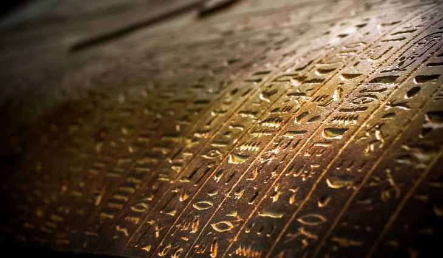
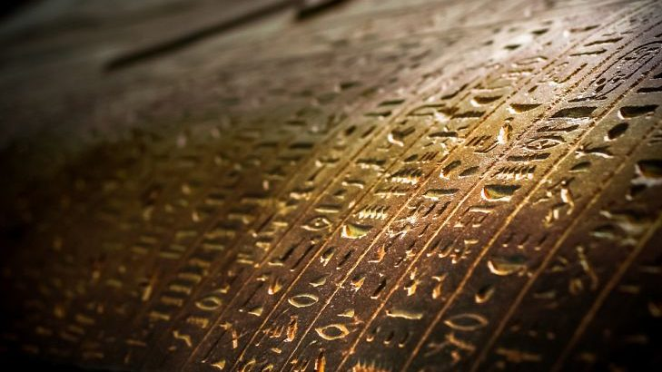
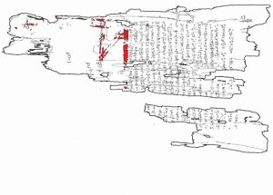
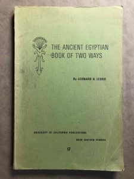

Wow!4,000 Year Old Life Map Found in Sarcophagus
Archeologists have discovered a 4,000-year old Egyptian sarcophagus with an unprecedented finding: an ancient map of the afterlife.A sarcophagus is a box-like funeral receptacle for a corpse, most commonly carved in stone, and usually displayed above ground, though it may also be buried.Discovery of the map was reported by the Journal of Egyptian Archaeology, which is an annual peer-reviewed academic journal covering research and reviews of recent books of importance to Egyptology.It was established in 1914 by the Egypt Exploration Society.
The remains of the early Middle Kingdom coffin of a lady called Ankh (B4B) contain parts of the earliest now known version of the Book of Two Ways.It contains the most detailed graphical composition of the Coffin Texts.
The purpose of the map was to provide a guide of the afterlife travel and the recollections of the dead.The book was also supposed to provide comfort and alleviate fear of death.The sarcophagus contained some of the chapters that provided an insight into Egyptians beliefs.
Their beliefs include the death of the body, but the soul enters an eternal kingdom.Once entering the kingdom the soul was either considered righteous or not.It is also believed the travel to reach the eternal kingdom was full of obstacles, such as encountering monsters, that could eat your soul or fall into the fire.
Additionally, for the dead to reach the destination safely, they were provided with gifts and clues for safe travel to the eternal kingdom gate.The map was believed to be one of the most important guides for the dead.The texts were drawn inside the wooden sarcophagus.Thereafter, the texts were written on papyrus and were put inside.Papyrus is a material prepared in ancient Egypt from the pithy stem of a water plant, used in sheets throughout the ancient Mediterranean world for writing or painting on and also for making rope, sandals, and boats.
The Book of Two Ways is the predecessor of the Book of the Dead.The Book of the Dead was most commonly written in hieroglyphic or hieratic script on a papyrus scroll, and often illustrated with vignettes depicting the deceased and their journey into the afterlife.The finest example, we have of the Egyptian Book of the Dead in antiquity is the Papyrus of Ani.
The archeologist Harco Willems is the one who is involved in the research.He made high resolution images and then used DStretch for precision.Hence Willems was able to identify the texts inside the sarcophagus.
[bsa_pro_ad_space id=4]
Share on Facebook Tweet Follow us
Posted On: 2019-10-17T00:00:00
Posted By: Christina Kitova







Content Date: 2019-10-17
Download Date: 2021-07-08
Document ID: L0C04DARB